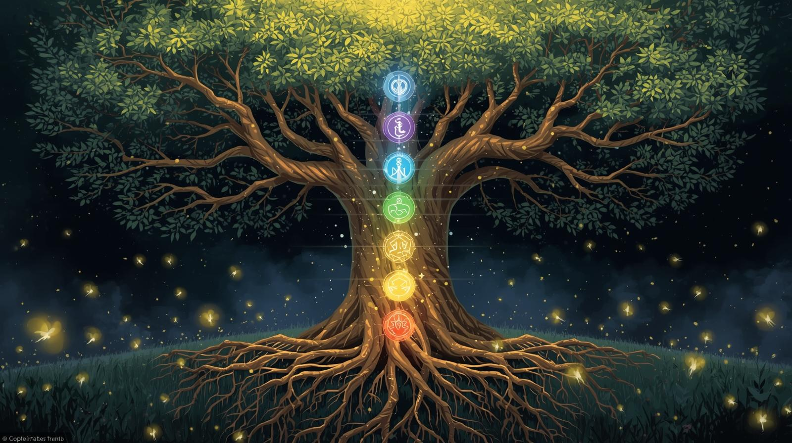

Kartenlegen & Pendeln
Klarheit finden – Orientierung spüren – den eigenen Weg erkennen
Manchmal steht man an einem Punkt im Leben, an dem sich alles im Kreis zu drehen scheint.
Fragen tauchen auf, Entscheidungen fühlen sich schwer an oder das eigene Bauchgefühl ist kaum noch zu hören.
Vielleicht beschäftigt dich:
Nicht immer braucht es sofort eine Antwort – oft reicht ein neuer Blickwinkel, um wieder ins Vertrauen zu kommen.
Was Kartenlegen & Pendeln bewirken können
Kartenlegen und Pendeln sind alte Werkzeuge der intuitiven Wegweisung.
Sie helfen dabei, innere Prozesse sichtbar zu machen, verborgene Zusammenhänge zu erkennen und das eigene Gefühl wieder wahrzunehmen.Das Pendel unterstützt besonders bei klaren Fragen und Entscheidungsprozessen.
Es hilft, innere Ja-/Nein-Tendenzen wahrzunehmen und sich wieder mit dem eigenen Bauchgefühl zu verbinden.Beide Methoden geben keine festen Zukunftsversprechen, sondern Impulse zur Selbstreflexion und Orientierung.
Warum eine Legung bei mir?
Ich arbeite nicht nach festen Deutungsschemata und nicht mit beliebigen Kartendecks.
Meine Legungen sind intuitiv, achtsam und individuell – so einzigartig wie dein Thema.
Ich verbinde:
Mir ist wichtig, dass du dich gesehen fühlst und mit einem klareren Gefühl aus der Legung gehst – nicht mit Abhängigkeit, sondern mit Vertrauen in dich selbst.
Über mich & meine Arbeit
Meine Intuition und meine Visionen begleiten mich, so lange ich denken kann.
Schon als Kind hatte ich immer wieder innere Bilder und Wahrnehmungen, die für mich selbstverständlich waren. Dieses Spüren hat mich nie verlassen.Ich höre auf meinen Bauch, arbeite mit Eingebungen und lasse Informationen einfließen, die sich während einer Legung zeigen dürfen – behutsam und respektvoll.
Für meine Arbeit nutze ich bewusst besonders ausgewählte Kartendecks:
Diese Karten unterstützen meine Art zu arbeiten und öffnen Räume für ehrliche, klare Impulse.
Einladung
Wenn du spürst, dass es Zeit ist, hinzuschauen, Klarheit zu finden oder deinem inneren Gefühl wieder mehr Raum zu geben, begleite ich dich gern ein Stück auf deinem Weg.

Bald buchbar
Pendelarbeit – kurze, klare Impulse
15–20 Minuten | 30 €
Für konkrete Fragen, Entscheidungsfindung und kurze Klärung.
Ideal, wenn du ein klares Anliegen hast und eine fokussierte Rückmeldung wünschst.
📞 Telefon oder 💻 Zoom
Hier BuchbarKarten & Pendel – intuitive Begleitung
30 Minuten | 65 €
Eine ganzheitliche Sitzung mit Kartenlegung und ergänzender Pendelarbeit.
Wir schauen konzentriert auf dein Thema und lassen stimmige Impulse entstehen.
📞 Telefon oder 💻 Zoom
Hier BuchbarKartenlegung – intuitiv & klar
30 Minuten | 55 €
Eine ruhige, tiefgehende Kartenlegung ohne Pendel.
Geeignet für Lebensfragen, Beziehungen und innere Prozesse.
📞 Telefon oder 💻 Zoom
Hier BuchbarHinweise
Alle Sitzungen finden telefonisch oder per Zoom statt.
Die Legungen dienen der spirituellen Orientierung und ersetzen keine medizinische oder therapeutische Beratung.